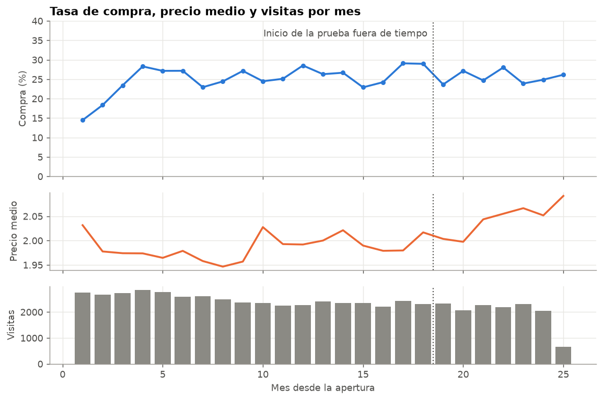

Documentación de la solución: objetivos, arquitectura, metodología y resultados
Se construyó una solución que estima, para cada visita de un cliente a la tienda, la probabilidad de que compre en la categoría y la probabilidad de que compre cada una de sus 5 marcas. Además, mide cuánto responde la compra al precio. La solución se validó en los últimos seis meses de datos, que no se usaron para construirla.
Recomendaciones
| Tipo | Objetivo | Cómo se mide |
|---|---|---|
| Negocio | Anticipar qué clientes comprarán, y qué producto, para dirigir acciones comerciales | Tasa de compra y captura en el cupo, frente al azar y a una regla simple |
| Negocio | Entender cómo responde la demanda al precio para decidir precios y promociones | Elasticidad por segmento y por marca, con intervalos de confianza |
| Negocio | Traducir los modelos en decisiones con valor económico medible | Margen incremental y KPIs por área, medidos con grupo de control |
| Técnico | Un modelo sin fuga de información, estable en el tiempo e interpretable | Validación temporal, PSI, SHAP y prueba fuera de tiempo |
| Técnico | Una solución reproducible y operable | Notebook que se ejecuta de principio a fin y función de puntuación |
El archivo compras_data.csv tiene 58,693 visitas de 500 clientes durante 730 días. Cada fila incluye si hubo compra, la marca y la cantidad, el precio y la promoción del día de 5 marcas de una categoría y el perfil del cliente. La tasa de compra es 24.9 %.
| Revisión | Resultado | Tratamiento |
|---|---|---|
| Nulos, duplicados y coherencia entre compra, marca y cantidad | Sin problemas | Ninguno |
| Precio y promoción | Iguales para todos los clientes de un mismo día | Se tratan como variables del día; la elasticidad se remuestrea por días |
ultima_marca_comprada | Es la marca de la visita anterior (100 % de coincidencia), no la de la última compra | Se usa con su significado real |
ultima_cantidad_comprada | Es un indicador 0/1 de compra en la visita anterior (100 %), no una cantidad (81.2 %) | Se renombra como compro_visita_anterior |
| Días 728 a 730 | 139 visitas y 0 compras; con una tasa de 25 %, la probabilidad es 4 × 10⁻¹⁸ | Registro incompleto: se excluyen |
tamanio_ciudad | El diccionario indica no considerarla | Excluida |
id_marca y cantidad | Son el resultado de la visita | Excluidas como predictores (fuga de información) |
Visitas (58,554) ──► Variables sin fuga (30 candidatas: historia, precio, perfil)
│
┌────────────────────────┼─────────────────────────────┐
▼ ▼ ▼
Segmentación K-Means Selección de variables Variables de precio y lealtad
(3 segmentos) (8 de 30) │
│ │ │
│ ▼ ▼
│ Modelo de propensión Modelo de elección de marca
│ P(compra) · XGBoost P(marca | compra) · multinomial
│ │ │
▼ └──────────────┬──────────────┘
Elasticidad por segmento ▼
(logística de respuesta al precio) P(compra de la marca j) = P(compra) × P(j | compra)
│ │
└──────────────────┬────────────────────┘
▼
Decisiones: priorizar visitas · fijar precios · elegir a quién dar descuentos
El diseño separa el entrenamiento mensual de la puntuación diaria. Puede implementarse con servicios administrados de cualquier proveedor.
Punto de venta, CRM y precios ──► Data lake (archivos crudos por día)
│
▼
Proceso diario de variables (historia, precio, segmento)
│
┌──────────────────────────┴───────────────────────────┐
▼ ▼
Entrenamiento mensual Puntuación diaria o en línea
(reentrena, compara con el vigente, (API para la app o la caja,
registra versión y ficha) lote nocturno para el CRM)
└──────────────► Registro de modelos ◄─────────────────┘
│
▼
Tablero de monitoreo: PSI, Gini, calibración y resultados del grupo de control
| Componente | AWS | Azure | Google Cloud |
|---|---|---|---|
| Almacenamiento | S3 | Data Lake Storage | Cloud Storage |
| Variables y orquestación | Glue, Step Functions | Data Factory | Dataflow, Cloud Composer |
| Entrenamiento y registro | SageMaker | Azure Machine Learning | Vertex AI |
| Puntuación | Endpoint de SageMaker o Lambda | Endpoint administrado | Endpoint de Vertex AI |
| Monitoreo | CloudWatch y QuickSight | Azure Monitor y Power BI | Cloud Monitoring y Looker |
| Aspecto | Decisión | Por qué |
|---|---|---|
| Puntuación | Lote nocturno con los precios del día siguiente; API en línea solo si la oferta se muestra en el momento de la visita | Hay unas 80 visitas por día: un lote basta para el CRM |
| Latencia en línea | Milisegundos por cliente | 4 variables y árboles de 2 niveles; la historia del cliente se precalcula cada noche |
| Reentrenamiento | Mensual, o antes si el PSI del score supera 0.25 | El entrenamiento completo toma unos 2 minutos |
| Versiones | Cada modelo se registra con su ficha; reemplaza al vigente solo si no ordena peor en el último mes, evaluado fuera de tiempo | Misma lógica de campeón y retador del análisis |
| Datos personales | Perfil cifrado y con acceso por roles; las salidas usan el id | El modelo de propensión no usa género, edad ni ingreso |
| Costo | Bajo: sin GPU, una instancia pequeña bajo demanda y almacenamiento de objetos | Volumen pequeño y entrenamiento corto |
El notebook guarda en modelo/modelo_propension.joblib el modelo de propensión, el de elección de marca, la segmentación y los parámetros de las variables (367 KB). El script puntuar.py lo carga, reconstruye las variables desde el historial y devuelve, para la última visita de cada cliente, p_compra, p_marca_1 a p_marca_5 y el segmento. La última visita puede venir sin resultado, como ocurre con una visita futura. El notebook verifica que el script reproduzca exactamente sus probabilidades en los 500 clientes.
python puntuar.py --historial data/compras_data.csv --salida puntuaciones.csv
En la nube, este mismo script es el paso de puntuación del lote nocturno, y su función puntuar es el núcleo de una API en línea.
| # | Paso | Qué se hace y por qué |
|---|---|---|
| 1 | Calidad de datos | Se contrasta cada columna con el diccionario y se detectan anomalías (sección 3). |
| 2 | Variables sin fuga | 30 candidatas calculadas solo con visitas anteriores: tasa histórica de compra suavizada, días desde la última compra y visita, marca anterior y preferida, precios, promociones y perfil. |
| 3 | Análisis exploratorio | Patrones de tiempo, precio, promociones, historia y perfil (sección 6.1). |
| 4 | Diseño temporal | Tres bloques de desarrollo (días 274 a 547), cada uno evaluado con un modelo entrenado con los días anteriores. Los días 548 a 727 (13,331 visitas) se reservan como prueba fuera de tiempo (OOT). |
| 5 | Segmentación | K-Means sobre el perfil demográfico estandarizado. El número de grupos se elige por estabilidad bootstrap (ARI). |
| 6 | Selección de variables | Criterio experto, concentración (≤ 95 %), estabilidad (PSI ≤ 0.25), IV y Gini por bloque, coherencia de signo y correlación de Spearman (≤ 0.85) con VIF. |
| 7 | Campeón, retadores y ajuste fino | Regla simple, logística, LightGBM y XGBoost; estos dos, con sus valores por defecto y con una búsqueda aleatoria de 20 combinaciones de hiperparámetros. En tres conjuntos de variables suman 16 configuraciones. Se elige con robusto = media − desviación del Gini y, dentro de una tolerancia de 0.01, el más simple. |
| 8 | Evaluación OOT | Gini, precisión media, tasa en el cupo y bootstrap pareado por cliente para los intervalos. |
| 9 | Calibración y sensibilidad | Calibración por decil, demanda semanal, validación aleatoria, clientes no vistos, grupos de variables y semillas. |
| 10 | Interpretabilidad y equidad | SHAP, odds ratios y comparación por género, edad y segmento. |
| 11 | Elasticidad de precio | Logística de respuesta al precio por segmento, con controles de historia, seis especificaciones de robustez, intervalos por remuestreo de días y una prueba de nivel fuera de tiempo. |
| 12 | Elección de marca | Regresión multinomial con precios, promociones y lealtad; elasticidades propias y cruzadas; probabilidad de comprar cada marca. |
| 13 | Captura de valor | Tabla por cupo, simulación de precios, estrategia de descuentos, KPIs por área y plan de monitoreo. |

Con 3 segmentos la agrupación es la más estable (ARI de 0.839). La silueta es baja (0.27): los segmentos son un resumen útil, no grupos naturales bien separados.
| Segmento | Clientes | Perfil | Tasa de compra | Elasticidad |
|---|---|---|---|---|
| Jóvenes de menor ingreso | 187 | 32 años, ingreso de 102 mil | 21.2 % | −3.68 |
| Adultos de ingreso medio | 206 | 37 años, ingreso de 119 mil | 26.5 % | −4.16 |
| Mayores de mayor ingreso | 107 | 55 años, ingreso de 160 mil, más educación | 28.8 % | −0.58 |
De 30 candidatas quedan 8: tasa histórica, días desde la última compra, marca de la visita anterior, días desde la visita anterior, edad, ingreso, ocupación y segmento.
n_visitas_previas es inestable por construcción (PSI de 8.0): crece con la antigüedad de la tienda.compro_visita_anterior sale por redundancia: tiene una correlación de 0.988 con la marca de la visita anterior.Solo podían ser elegidas las configuraciones que respetan la selección de variables. Ganó un XGBoost ajustado con 4 variables de historia (800 árboles de 2 niveles, tasa de aprendizaje de 0.03). LightGBM ajustado con las mismas variables queda a 0.003 de puntaje robusto: los dos algoritmos empatan en la práctica.
| Modelo | Variables | Gini desarrollo | Gini OOT (IC 95 %) | Compra en el 20 % |
|---|---|---|---|---|
| Elegido: XGBoost ajustado, historia | 4 | 0.485 | 0.448 (0.406 a 0.488) | 51.4 % |
| LightGBM ajustado, historia | 4 | 0.483 | 0.451 (0.410 a 0.491) | 51.3 % |
| LightGBM ajustado, 30 candidatas | 30 | 0.475 | 0.440 (0.399 a 0.480) | 51.1 % |
| Campeón: logística, 30 candidatas | 30 | 0.476 | 0.405 (0.360 a 0.449) | 50.0 % |
| Regla: tasa histórica | 1 | 0.454 | 0.371 (0.320 a 0.418) | 48.4 % |
| Azar | 0 | 0 | 0 | 25.2 % |


| Marca | Participación | Elasticidad total a su precio | Gini OOT combinado | Gini OOT regla por marca |
|---|---|---|---|---|
| 1 (la más barata) | 9.2 % | −6.79 | 0.529 | 0.515 |
| 2 | 31.0 % | −2.44 | 0.627 | 0.560 |
| 3 | 5.7 % | No identificable | 0.755 | 0.790 |
| 4 | 20.0 % | −2.08 | 0.784 | 0.798 |
| 5 (la más cara) | 34.0 % | −0.51 | 0.863 | 0.842 |
La marca la decide sobre todo la lealtad: la marca preferida del cliente acierta en 78.5 % de las compras, y el modelo multinomial reduce la log loss de 1.514 a 0.743. La marca 1 le quita clientes sobre todo a la marca 2. La marca 3 casi no cambia de precio, así que su elasticidad no se puede estimar.
| Cupo | Compra con el modelo | Compra con la regla | Diferencia (IC 95 %, puntos) | Captura de compras |
|---|---|---|---|---|
| 5 % | 68.9 % | 69.1 % | −3.9 a +3.8 | 13.7 % |
| 10 % | 63.8 % | 62.4 % | −0.1 a +4.0 | 25.4 % |
| 20 % | 51.4 % | 48.4 % | +1.2 a +4.4 | 40.9 % |
| 30 % | 44.8 % | 43.0 % | +1.0 a +2.9 | 53.4 % |
| 50 % | 37.0 % | 34.7 % | +1.7 a +3.2 | 73.4 % |
Con un margen bruto ilustrativo de 30 %, aplicando la elasticidad de cada segmento a las visitas OOT:
| Cambio de precio | Compras | Ingreso | Margen |
|---|---|---|---|
| −5 % | +14.3 % | +8.1 % | −5.2 % |
| −1 % | +2.7 % | +1.6 % | −0.8 % |
| +1 % | −2.7 % | −1.6 % | +0.7 % |
| +5 % | −12.7 % | −7.8 % | +2.4 % |
Bajar precios gana volumen pero pierde margen. El aumento de margen con precios más altos viene de los mayores de mayor ingreso. Como la respuesta sostenida al precio parece menor que la de corto plazo, estas cifras son un límite superior de la caída de compras.
| Estrategia (20 % de las visitas) | Compras incrementales | Compras subsidiadas | Margen incremental |
|---|---|---|---|
| Mayor propensión | 113 | 1,473 | −272 |
| Mayor aumento de probabilidad | 166 | 1,008 | −50 |
| Mayor margen incremental | 111 | 420 | +37 |
| Al azar | 95 | 683 | −66 |
Solo gana dinero la estrategia que elige visitas de baja propensión (15.7 %) en los segmentos sensibles al precio. La ganancia es pequeña y proviene de una elasticidad estimada, por eso debe validarse con un piloto.
| Área | Uso | Indicador de captura de valor | Cómo se mide |
|---|---|---|---|
| Marketing y CRM | Ofertas personalizadas por visita y por marca | Margen incremental por oferta; costo por compra incremental | Grupo de control aleatorio sin oferta (10 % de las visitas elegibles) |
| Pricing | Nivel de precio y calendario de promociones por marca | Margen bruto de la categoría; participación por marca | Pruebas de precio por días alternados o tiendas comparables |
| Operaciones e inventario | Proyección de demanda total y por marca | Error de la proyección semanal; quiebres de stock; merma | Comparación con la proyección actual durante 8 semanas |
| Finanzas | Presupuesto de descuentos | Retorno de la inversión en descuentos | Margen incremental ÷ costo del descuento, con grupo de control |
| Ciencia de datos | Mantener los modelos vigentes | Gini, PSI del score, calibración, elasticidades | Monitoreo mensual (sección 8) |
| Indicador | Frecuencia | Acción |
|---|---|---|
| PSI del score | Mensual | > 0.25: reentrenar |
| Gini del último mes | Mensual | < 0.30: revisar variables |
| Sesgo de demanda semanal | Semanal | > 10 %: recalibrar |
| Elasticidad por segmento | Trimestral | Cambio de signo: reestimar |
| Margen del tratado frente al control | Por campaña | < 0: suspender la oferta |
| Semana | Fase |
|---|---|
| 1 | Entendimiento y calidad de datos |
| 2 | Análisis exploratorio y variables |
| 3 a 4 | Modelos, elasticidad y elección de marca |
| 5 | Despliegue piloto y tablero |
| 6 a 13 | Piloto con grupo de control y decisión de escalar |
Todo el análisis está en nb_01_propension_elasticidad.ipynb. Se ejecuta de principio a fin en unos tres minutos con Python 3.14 y, con SEMILLA = 42, reproduce todas las cifras de este documento. Las dependencias, con sus versiones exactas, están en requirements_purchase-propensity-price-elasticity.txt.
python -m venv venv-purchase-propensity-price-elasticity .\venv-purchase-propensity-price-elasticity\Scripts\python.exe -m pip install -r requirements_purchase-propensity-price-elasticity.txt # Copiar compras_data.csv en data/, abrir el notebook con ese kernel y ejecutar todas las celdas
Librerías: pandas, NumPy, scikit-learn, LightGBM, XGBoost, joblib y Matplotlib.